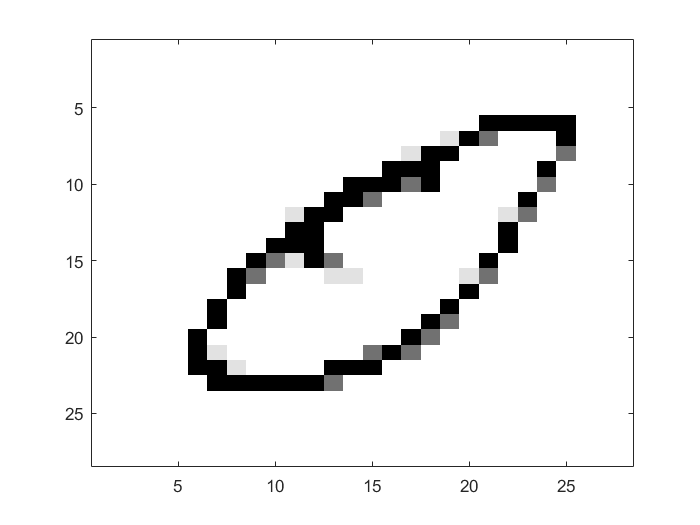
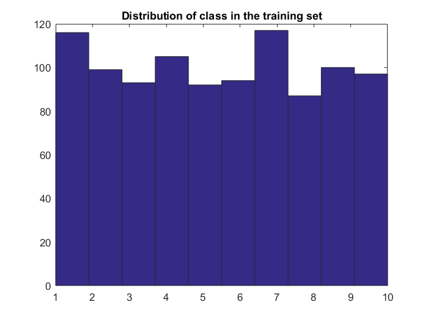
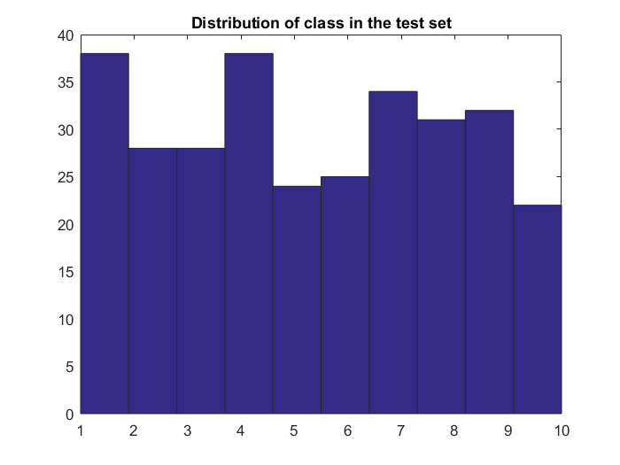
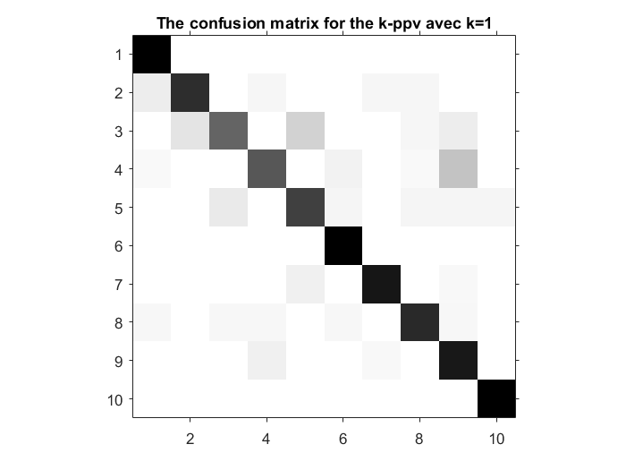
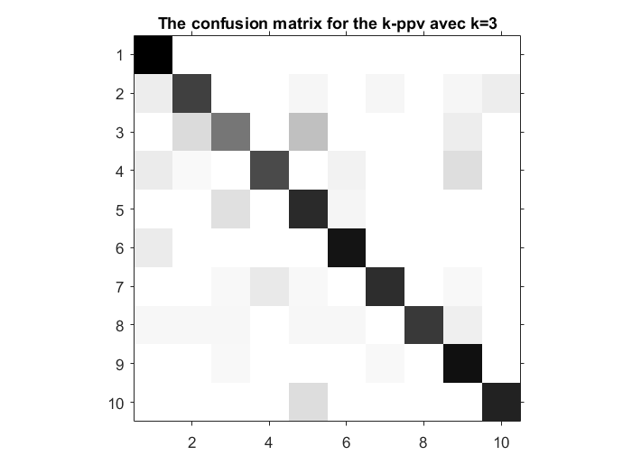
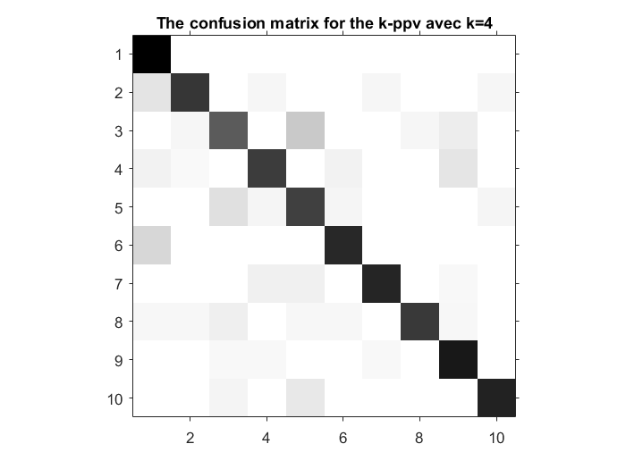

TP kppv : k plus proches voisins
Author : ZHU Fangda
Contents
Les données
close all; load data_app; X_train = x; y_train = S; load data_test; X_test = x; y_test = S; m = 16; im = reshape(x(m,:), 28, 28)'; image(255*ones(28,28) - im); colormap(gray); S(m); figure() hist(Sa) title('Distribution of class in the training set') figure() hist(S_val) title('Distribution of class in the test set')  
D'après la figure ci-dessous, on peut constacte que les examples sont prèsque équiréparties suivant les classes.
3 Classement par kpp
On implémente l'algorithme de kpp comme ci-dessous:
function [ y_test ] = kpp_predicate( X_test , X_train, y_train, k) % Returns the result of the kpp % Input : % X_test : the test vector % X_train : the training set % y_train : the class of each sample in the training set % k : number of the neighbor % Output : % y_test : the result of predicate for the x_test % train_row = size(X_train,1); test_row = size(X_test,1); y_test = zeros(test_row,1); for i = 1:test_row x_matrix = repmat(X_test(i, :), train_row, 1); dist = sqrt(sum((x_matrix - X_train).^2,2)); [B, I] = mink(dist, k); y_test(i,1) = mode(y_train(I)); end end
function [ B I ] = mink( vector, k ) % Returns the k largest values and their index % Input : % list : a vector % K : the number of the largest element % Output : % B : the K largest value in the vector % I : the index of the K leargest [dis, index] = sort(vector); B = dis(1:k); I = index(1:k); end
function [ conf_max ] = confusion_matrix( y_val, y_predicate) % Get confusion matrix nb = 10; nb_sample = size(y_val,1); conf_max = zeros(nb, nb); for i = 1:nb_sample conf_max(y_val(i), y_predicate(i)) = conf_max(y_val(i), y_predicate(i)) + 1; end end
function [ ] = show_confusion_matrix( matrix, k ) % Visualiez the confusion matrix norm = repmat(sum(matrix, 2),1,10); figure(); imshow(1 - matrix ./ norm,'InitialMagnification','fit'); title( strcat(['The confusion matrix for the k-ppv avec k=' , int2str(k)]) ); colormap('gray'); axis on; end
k = 4; for k = [1,3,4,5] y_pre = kpp_predicate(X_test, X_train, y_train, k); error_score = 1 - sum(y_test == y_pre) / size(y_test,1); str = sprintf('K = %d \t error score = %.2f', i, error_score); display(str); display(conf_matrix); conf_matrix = confusion_matrix(y_test, y_pre); show_confusion_matrix(conf_matrix, k) end
str =
K = 10 error score = 0.15
conf_matrix =
38 0 0 0 0 0 0 0 0 0
2 23 0 0 1 0 1 0 1 0
0 2 17 0 6 0 0 1 2 0
3 1 0 29 0 1 0 0 4 0
0 0 2 1 20 0 0 0 0 1
4 0 0 0 0 21 0 0 0 0
0 0 0 2 2 0 29 0 1 0
1 1 2 2 1 1 0 22 1 0
0 0 1 0 0 0 1 0 30 0
0 0 0 1 0 0 0 1 0 20
str =
K = 10 error score = 0.18
conf_matrix =
38 0 0 0 0 0 0 0 0 0
2 23 0 1 0 0 1 1 0 0
0 3 17 0 5 0 0 1 2 0
1 0 0 25 0 2 0 1 9 0
0 0 2 0 18 1 0 1 1 1
0 0 0 0 0 25 0 0 0 0
0 0 0 0 2 0 31 0 1 0
1 0 1 1 0 1 0 26 1 0
0 0 0 2 0 0 1 0 29 0
0 0 0 0 0 0 0 0 0 22
str =
K = 10 error score = 0.18
conf_matrix =
38 0 0 0 0 0 0 0 0 0
2 21 0 0 1 0 1 0 1 2
0 4 15 0 7 0 0 0 2 0
3 1 0 27 0 2 0 0 5 0
0 0 3 0 20 1 0 0 0 0
2 0 0 0 0 23 0 0 0 0
0 0 1 3 1 0 28 0 1 0
1 1 1 0 1 1 0 24 2 0
0 0 1 0 0 0 1 0 30 0
0 0 0 0 3 0 0 0 0 19
str =
K = 10 error score = 0.17
conf_matrix =
38 0 0 0 0 0 0 0 0 0
3 22 0 1 0 0 1 0 0 1
0 1 18 0 6 0 0 1 2 0
2 1 0 29 0 2 0 0 4 0
0 0 3 1 18 1 0 0 0 1
4 0 0 0 0 21 0 0 0 0
0 0 0 2 2 0 29 0 1 0
1 1 2 0 1 1 0 24 1 0
0 0 1 1 0 0 1 0 29 0
0 0 1 0 2 0 0 0 0 19
   D'après la matrix de confusion, on peut trouver que la plus part des image sont bien classée.
4.1 1-ppv avec prototype
prototype = zeros(10,784); y_proto = zeros(10,1); for i = 1:10 y_proto(i) = i; prototype(i,:) = mean(X_train(y_train == i, :),1); end y_pre = kpp_predicate(X_test, prototype, y_proto, 1); error_score = 1 - sum(y_test == y_pre) / size(y_test,1) conf_mat_proto = confusion_matrix(y_test, y_pre); title('The confusion matrix for the 1-ppv avec prototype')
error_score =
0.2633
D'après la résultat ci-dessus, on constate que le taux de erreur est augementé. Mais le resultat ce qu'on obtiens avec prototype est assez bien. Cette methode fais mois de calcules. Avec cette méthode, une fois on obtiens le model, le model ne enregistre que le prototype. Du coupe, la complexité du temps et la complèxité de l'èspère est mieux que la model obtenus en 3.